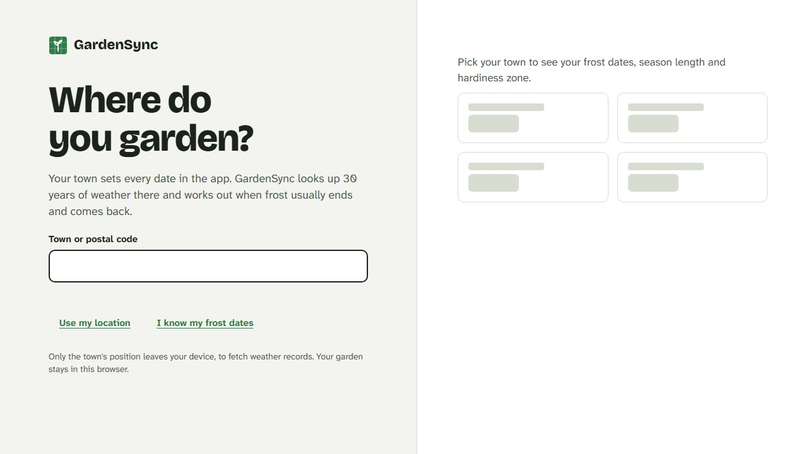
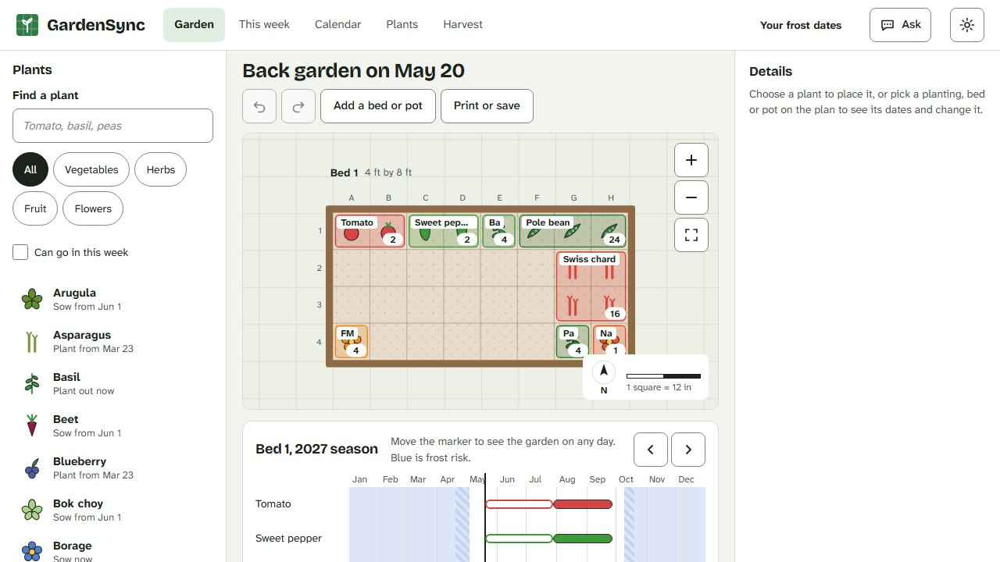
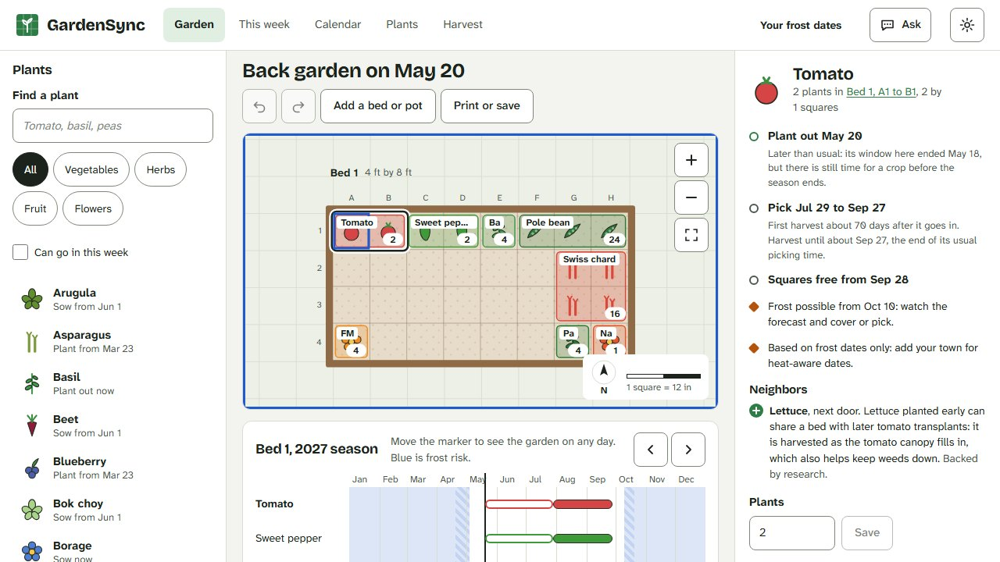
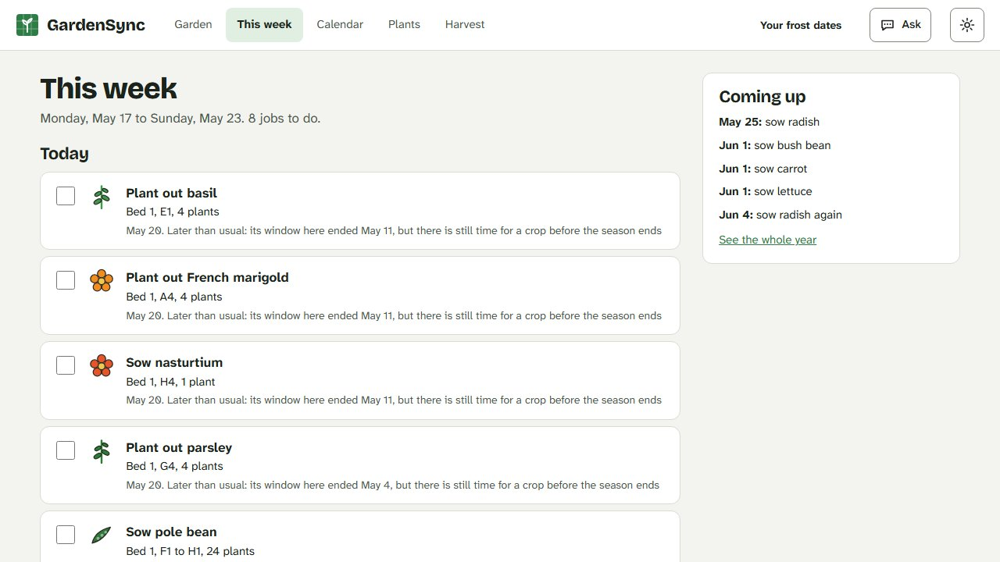
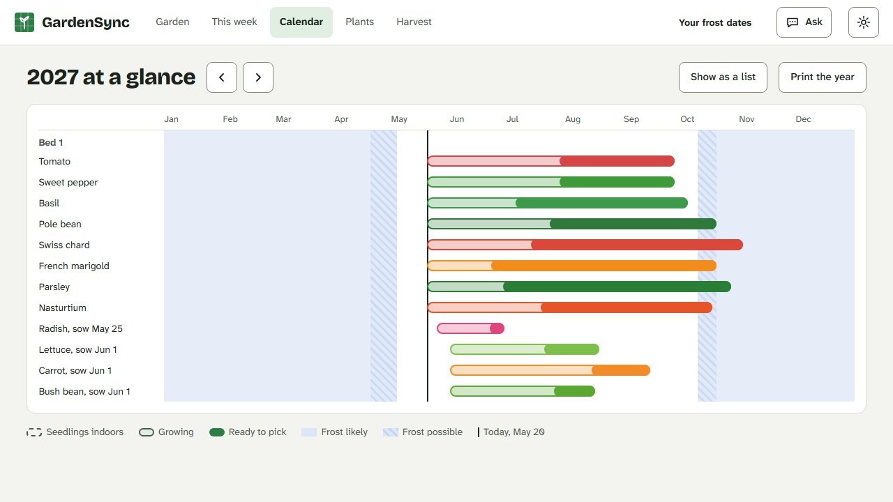
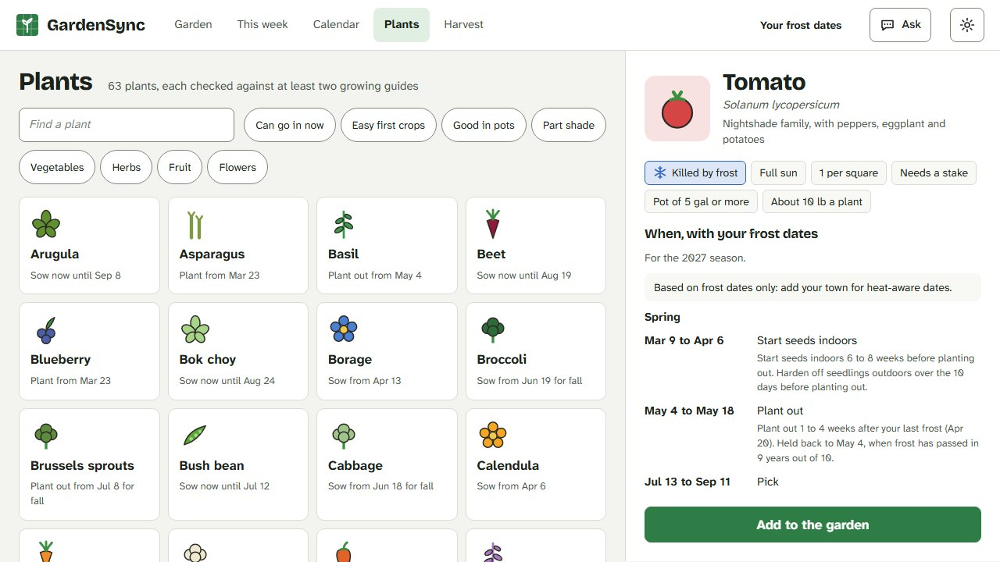

Design first
Three visual directions were drawn as live artboards, each over the same planner screen. The chosen one, "Plot", was then drawn out for every screen, with a glyph for each plant form, before any code was written.
Version 8.0: free and open source
Draw your beds, drop plants into the squares, and GardenSync tells you when to start, sow, plant out and pick, using frost dates worked out from 30 years of weather for your own town.
No account and no server. Your garden stays in your browser and works offline.
01 · Where you garden
Type your town, use your location, or type the frost dates you already know. GardenSync downloads 30 years of daily temperatures for that spot from Open-Meteo and works out your typical last and first frost, the date frost has passed in 9 years out of 10, your hardiness zone and your monthly temperatures.
It works in both hemispheres. Where frost is rare or never comes, the schedule follows temperature instead, and says so.

02 · The planner
Beds, planters, window boxes, pots and grow bags are drawn to scale in feet or meters. Pick a plant and tap two squares: it takes its real square-foot footprint, sixteen carrots to a square or one squash to four, and goes in at the next window that suits it.
Friends and foes show in the bed, a taken square says when it frees up, and every change can be undone. Mouse, touch, pen and keyboard all work.
03 · The season
Every planting knows when to start indoors, plant out, start picking and pull out, and says why: "6 to 8 weeks before your last frost, Apr 16". Tender crops wait for the frost risk to pass and the soil to warm. In hot places, summer crops skip the weeks too hot to set fruit. Fall crops are counted back from your first frost.
Drag the season slider to see the bed on any day, so lettuce in spring, beans in the same squares in summer and garlic over winter all fit.
04 · This week and the year
This week lists the jobs due now, from hardening off seedlings to the first pick, each with its reason, and a 7-night forecast warns when frost threatens what is in the ground. The calendar shows the whole year for every planting, and prints on one page.
05 · The plant library
Sixty-three vegetables, herbs, fruit and companion flowers, each one checked against university extension and RHS guidance, with the sources on every card and the dates worked out for your town. Companion pairings say whether trials back them or they are garden tradition.
Add your own varieties from a seed packet: anything you leave blank comes from the parent crop.
Log each pick against its planting and see it beside what the plan expects.
The back garden, the allotment and the patio, each with its own plan.
Print the plan as a poster, save it as a picture, or share a link that opens a copy.
Install it like an app. Autosave and a daily backup kept for a week; download a copy any time.
With your own Anthropic key it can answer questions, plan a bed for you to review, and read a seed packet photo. Nothing changes until you press Apply.
Open 8.0 in the same browser and your old garden comes across. The old save is left untouched.





Build notes
GardenSync started in early 2026. Version 8.0 is a ground-up rebuild for home gardeners anywhere, built with Claude.
Three visual directions were drawn as live artboards, each over the same planner screen. The chosen one, "Plot", was then drawn out for every screen, with a glyph for each plant form, before any code was written.
The climate and schedule code is pure TypeScript with about 750 unit tests, run in two time zones to catch date bugs. Planting windows for six places, from Ohio to Melbourne, Phoenix and Singapore, were checked against extension guidance and then frozen as readable goldens.
Each plant's spacing, timing, temperatures and yield were checked against university extension services and the RHS. A lint test refuses a plant without sources, and companion claims must say whether they are tested or traditional.
About a hundred end-to-end tests drive the app in three browsers with accessibility checks on every screen. Blind design critics reviewed screenshots of every screen at four sizes, and testing the live build with a southern-hemisphere town caught date bugs the tests had missed.
One immutable garden document, changed only through undoable edits and validated the same way whether it comes from storage, a file, a link or the assistant. No accounts, no analytics, no server.
The clips and pictures on this page were recorded by a Playwright script against the app, with a fixed date and a starter garden, not by hand.